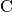
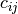

Fit dialog.
Table of Contents
| Name | Direction | Type | Default | Description |
|---|---|---|---|---|
| Function | InOut | Function | Mandatory | Parameters defining the fitting function and its initial values |
| InputWorkspace | Input | Workspace | Mandatory | Name of the input Workspace |
| IgnoreInvalidData | Input | boolean | False | Flag to ignore infinities, NaNs and data with zero errors. |
| DomainType | Input | string | Simple | The type of function domain to use: Simple, Sequential, or Parallel. Allowed values: [‘Simple’, ‘Sequential’, ‘Parallel’] |
| EvaluationType | Input | string | CentrePoint | The way the function is evaluated on histogram data sets. If value is “CentrePoint” then function is evaluated at centre of each bin. If it is “Histogram” then function is integrated within the bin and the integrals returned. Allowed values: [‘CentrePoint’, ‘Histogram’] |
| PeakRadius | Input | number | 0 | A value of the peak radius the peak functions should use. A peak radius defines an interval on the x axis around the centre of the peak where its values are calculated. Values outside the interval are not calculated and assumed zeros.Numerically the radius is a whole number of peak widths (FWHM) that fit into the interval on each side from the centre. The default value of 0 means the whole x axis. |
| Ties | Input | string | Math expressions defining ties between parameters of the fitting function. | |
| Constraints | Input | string | List of constraints | |
| MaxIterations | Input | number | 500 | Stop after this number of iterations if a good fit is not found |
| OutputStatus | Output | string | Whether the fit was successful | |
| OutputChi2overDoF | Output | number | Returns the goodness of the fit | |
| Minimizer | Input | string | Levenberg-Marquardt | Minimizer to use for fitting. Allowed values: [‘BFGS’, ‘Conjugate gradient (Fletcher-Reeves imp.)’, ‘Conjugate gradient (Polak-Ribiere imp.)’, ‘Damped GaussNewton’, ‘FABADA’, ‘Levenberg-Marquardt’, ‘Levenberg-MarquardtMD’, ‘Simplex’, ‘SteepestDescent’, ‘Trust Region’] |
| CostFunction | InOut | string | Least squares | The cost function to be used for the fit, default is Least squares. Allowed values: [‘Least squares’, ‘Poisson’, ‘Rwp’, ‘Unweighted least squares’] |
| CreateOutput | Input | boolean | False | Set to true to create output workspaces with the results of the fit(default is false). |
| Output | Input | string | A base name for the output workspaces (if not given default names will be created). The default is to use the name of the original data workspace as prefix followed by suffixes _Workspace, _Parameters, etc. | |
| CalcErrors | Input | boolean | False | Set to true to calcuate errors when output isn’t created (default is false). |
| OutputCompositeMembers | Input | boolean | False | If true and CreateOutput is true then the value of each member of a Composite Function is also output. |
| ConvolveMembers | Input | boolean | False | If true and OutputCompositeMembers is true members of any Convolution are output convolved with corresponding resolution |
| OutputParametersOnly | Input | boolean | False | Set to true to output only the parameters and not workspace(s) with the calculated values (default is false, ignored if CreateOutput is false and Output is an empty string). |
If Function defines a one-dimensional function and InputWorkspace is a MatrixWorkspace the algorithm will have these additional properties:
| Name | Direction | Type | Default | Description |
|---|---|---|---|---|
| WorkspaceIndex | Input | integer | 0 | The spectrum to fit, using the workspace numbering of the spectra |
| StartX | Input | double | Start of the spectrum | An X value in the first bin to be included in the fit |
| EndX | Input | double | End of the spectrum | An X value in the last bin to be included in the fit |
If Function defines a one-dimensional function and InputWorkspace is a Table Workspace the algorithm will have these additional properties:
| Name | Direction | Type | Default | Description |
|---|---|---|---|---|
| StartX | Input | double | Start of the spectrum | An X value in the first bin to be included in the fit |
| EndX | Input | double | End of the spectrum | An X value in the last bin to be included in the fit |
| XColumn | Input | string | The name of the X column. | |
| YColumn | Input | string | The name of the Y column. | |
| ErrColumn | Input | string | The name of the error column. |
This is a generic algorithm for fitting data in a Workspace with a function. The workspace must have the type supported by the algorithm. Currently supported types are: MatrixWorkspace and Table Workspace for fitting with a IFunction1D and MDWorkspace for fitting with IFunctionMD. After Function and InputWorkspace properties are set the algorithm may decide that it needs more information from the caller to locate the fitting data. For example, if a spectrum in a MatrixWorkspace is to be fit with a 1D function it will need to know at least the index of that spectrum. To request this information Fit dynamically creates relevant properties which the caller can set. Note that the dynamic properties depend both on the workspace and the function. For example, the data in a MatrixWorkspace can be fit with a 2D function. In this case all spectra will be used in the fit and no additional properties will be declared. The Function property must be set before any other.
The function and the initial values for its parameters are set with the Function property. A function can be simple or composite. A simple function has a name registered with Mantid framework. The Fit algorithm creates an instance of a function by this name. A composite function is an arithmetic sum of two or more functions (simple or composite). Each function has a number of named parameters, the names are case sensitive. All function parameters will be used in the fit unless some of them are tied. Parameters can be tied by setting the Ties property. A tie is a mathematical expression which is used to calculate the value of a (dependent) parameter. Only the parameter names of the same function can be used as variables in this expression.
Using the Minimizer property, Fit can be set to use different algorithms to perform the minimization. By default if the function’s derivatives can be evaluated then Fit uses the GSL Levenberg-Marquardt minimizer.
In Mantidplot this algorithm can be run from the Fit Property Browser which allows all the settings to be specified via its graphical user interface.
To use a simple function for a fit set its name and initial parameter values using the Function property. This property is a comma separated list of name=value pairs. The name of the first name=value pairs must be “name” and it must be set equal to the name of one of a simple function. This name=value pair is followed by name=value pairs specifying values for the parameters of this function. If a parameter is not set in Function it will be given its default value defined by the function. All names are case sensitive. For example for fitting a Gaussian the Function property might look like this:
Function: "name=Gaussian, PeakCentre=4.6, Height=10, Sigma=0.5"
Some functions have attributes. An attribute is a non-fitting parameter and can be of one of the following types: text string, integer, or double. Attributes are set just like the parameters using name=value pairs. For example:
Function: "name=UserFunction, Formula=a+b*x, a=1, b=2"
In this example Formula is the name of a string attribute which defines an expression for the user UserFunction. The fitting parameters a and b are created when the Formula attribute is set. It is important that Formula is defined before initializing the parameters.
A list of the available simple functions can be found here.
A composite function is a sum of simple functions. It does not have a name. To define a composite function set a number of simple functions in the Function property. Each simple function definition must be separated by a semicolon ‘;’. For example fitting two Gaussians on a linear background might look like this:
Function: "name=LinearBackground, A0=0.3;
name=Gaussian, PeakCentre=4.6, Height=10, Sigma=0.5;
name=Gaussian, PeakCentre=7.6, Height=8, Sigma=0.5"
Parameters can be tied to other parameters or to a constant. In this case they do not take part in the fitting but are evaluated using the tying expressions. Use Ties property to set any ties. In case of a simple function the parameter names are used as variables in the tying expressions. For example
Ties: "a=2*b+1, c=2"
This ties parameter “a” to parameter “b” and fixes “c” to the constant 2.
In case of a composite function the variable name must refer to both the parameter name and the simple function it belongs to. It is done by writing the variable name in the following format:
f.
The format consists of two parts separated by a period ‘.’. The first part defines the function by its index in the composite function (starting at 0). The index corresponds to the order in which the functions are defined in the Function property. For example:
Ties: "f1.Sigma=f0.Sigma,f2.Sigma=f0.Sigma"
This ties parameter “Sigma” of functions 1 and 2 to the “Sigma” of function 0. Of course all three functions must have a parameter called “Sigma” for this to work. The last example can also be written
Ties: "f1.Sigma=f2.Sigma=f0.Sigma"
Parameters can be constrained to be above a lower boundary and/or below an upper boundary. If a constraint is violated a penalty to the fit is applied which should result the parameters satisfying the constraint. The penalty applied is described in more detail here. Use Constraints property to set any constraints. In case of a simple function the parameter names are used as variables in the constraint expressions. For example
Constraints: "4.0 < c < 4.2"
Constraint the parameter “c” to be with the range 4.0 to 4.2, whereas
Constraints: "c > 4.0"
means “c” is constrained to be above the lower value 4.0 and
Constraints: "c < 4.2"
means “c” is constrained to be below the upper value 4.2.
In case of a composite function the same notation is used for constraints and for ties. For example
Constraints: "f1.c < 4.2"
constrain the parameter “c” of function 1.
The error values in the input workspace are used to weight the data in the fit. Zero error values are not allowed and are replaced with ones.
If the input MatrixWorkspace contains histogram data then there are two ways to evaluate the fit function on it and it can be set via the EvaluationType property. If EvaluationType is “CentrePoint” (which is the default) the function is evaluated at the centre of the bin. If EvaluationType is set to “Histogram” then the function is integrated within each bin and these integrals are used to evaluate the cost function.
The “Histogram” evaluation type will typically give more accurate results when fitting histograms with very large bins. It also less sensitive to a particular binning.
For the next example a spectrum was generated and rebinned to different bin sizes. Each binned spectrum was fitted using both “CentrePoint” (left column) and “Histogram” evaluation (right column). As it can be seen form the plots the “Histogram” fitting gives more consistent results which are also closer to the correct values (Amplitude=20.0, PeakCentre=0.0, FWHM=1.0).

Currently only the following functions can be used in a fit with “Histogram” evaluation:
If any other functions need to be included in the list please leave a request at the Forum.
Regions of a 1D data set can be excluded from fit with the Exclude property. It is a list of pairs of real numbers which define the regions to exclude. In the following example the regions under the peaks are excluded thus fitting only the background
x = np.linspace(-10, 10, 100)
y = np.exp(-4*(x+3)**2) + np.exp(-4*(x-3)**2) + 0.1 - 0.001*x**2
ws = CreateWorkspace(x, y)
Fit("name=Polynomial,n=2", ws, Exclude=[-5, -1, 1, 5], Output='out')

The effect of setting PeakRadius to a non-default value can be seen from next figure.

It can be used to speed up computations but there is a danger of introducing higher errors.
Two output properties are added if the property ‘CreateOutput’ is set:
These two properties are not shown in the table of properties above, as they are declared dynamically, but they can be retrieved after executing the algorithm (as long as the property ‘CreateOutput’ was used). These two output properties provide workspaces which are also added in the Analysis Data Service (ADS) with names defined by appending a suffix to the name of the original data workspace. You can replace the name of the workspace with a different name if you give a value to the property ‘Output’ which redefines the base name of the output workspaces.
OutputParameters is a TableWorkspace with the fitted parameter values. OutputWorkspace is a Workspace2D which compares the fit with the original data. The names given to these workspaces are built by appending the suffixes “_Parameters” and “_Workspace” to the name given in the input property ‘Output’. For example, if ‘Output’ was set to “MyResults” the name of the parameter TableWorkspace will be “MyResults_Parameters” and the name of the Workspace2D will be “MyResults_Workspace”.
The Workspace2D produced in the output property ‘OutputWorkspace’ (example name: “MyResults_Workspace”) has three spectra:
Also, if the function’s derivatives can be evaluated an additional
TableWorkspace is
produced. If for example the property Output is set to “MyResults”
then this TableWorkspace will have the name
“MyResults_NormalisedCovarianceMatrix” and it contains a calculated
correlation matrix. Denote this matrix  and its elements
 then the diagonal elements are listed as 1.0 and the
off diagonal elements as percentages of correlation between parameter
 and
and  equal to
equal to

It is possible to fit to multiple data sets using the fit algorithm. This
can be either simultaneously or sequentially. There are a few differences
to a single fit. Firstly is that the CompositeFunction
must be a MultiDomainFunction and each of the individual fitting functions must include
$domain=i. The extra workspaces can be added by placing an _i after InputWorkspace and
InputWorkspaceIndex starting with  for the second workspace. It is also possible to
set the fitting range for each data set individually in the same way as the
for the second workspace. It is also possible to
set the fitting range for each data set individually in the same way as the InputWorkspace.
If a variable is to be fitted using data from multiple data sets then a tie has
to be used. The values that are tied will have the same value and be calculated from multiple
data sets.
This example shows a simple fit to a Gaussian function. The algorithm properties are:
InputWorkspace: Test
WorkspaceIndex: 0
Function: name=Gaussian, PeakCentre=4, Height=1.3, Sigma=0.5
Output: res

GaussianFit.jpg
The next example shows a fit of the same data but with a tie.
InputWorkspace: Test
WorkspaceIndex: 0
Function: name=Gaussian, PeakCentre=4, Height=1.3, Sigma=0.5
Ties: Sigma=Height/2
Output: res

GaussianFit_Ties.jpg
This example shows a fit of two overlapping Gaussians on a linear background. Here we create a composite function with a LinearBackground and two Gaussians:
InputWorkspace: Test
WorkspaceIndex: 0
Function: name=LinearBackground,A0=1;
name=Gaussian,PeakCentre=4,Height=1.5, Sigma=0.5;
name=Gaussian,PeakCentre=6,Height=4, Sigma=0.5
Output: res

Gaussian2Fit.jpg
This example repeats the previous one but with the Sigmas of the two Gaussians tied:
InputWorkspace: Test
WorkspaceIndex: 0
Function: name=LinearBackground,A0=1;
name=Gaussian,PeakCentre=4,Height=1.5, Sigma=0.5;
name=Gaussian,PeakCentre=6,Height=4, Sigma=0.5
Ties: f2.Sigma = f1.Sigma
Output: res

Gaussian2Fit_Ties.jpg
Example - Fit a Gaussian to a peak in a spectrum:
# create a workspace with a gaussian peak sitting on top of a linear (here flat) background
ws = CreateSampleWorkspace(Function="User Defined", UserDefinedFunction="name=LinearBackground, \
A0=0.3;name=Gaussian, PeakCentre=5, Height=10, Sigma=0.7", NumBanks=1, BankPixelWidth=1, XMin=0, XMax=10, BinWidth=0.1)
# Setup the data to fit:
workspaceIndex = 0 # the spectrum with which WorkspaceIndex to fit
startX = 1 # specify fitting region
endX = 9 #
# Setup the model, here a Gaussian, to fit to data
tryCentre = '4' # A start guess on peak centre
sigma = '1' # A start guess on peak width
height = '8' # A start guess on peak height
myFunc = 'name=Gaussian, Height='+height+', PeakCentre='+tryCentre+', Sigma='+sigma
# here purposely haven't included a linear background which mean fit will not be spot on
# to include a linear background uncomment the line below
#myFunc = 'name=LinearBackground, A0=0.3;name=Gaussian, Height='+height+', PeakCentre='+tryCentre+', Sigma='+sigma
# Do the fitting
fit_output = Fit(InputWorkspace='ws', WorkspaceIndex=0, StartX = startX, EndX=endX, Output='fit', Function=myFunc)
paramTable = fit_output.OutputParameters # table containing the optimal fit parameters
fitWorkspace = fit_output.OutputWorkspace
print("The fit was: {}".format(fit_output.OutputStatus))
print("chi-squared of fit is: {:.2f}".format(fit_output.OutputChi2overDoF))
print("Fitted Height value is: {:.2f}".format(paramTable.column(1)[0]))
print("Fitted centre value is: {:.2f}".format(paramTable.column(1)[1]))
print("Fitted sigma value is: {:.2f}".format(paramTable.column(1)[2]))
# fitWorkspace contains the data, the calculated and the difference patterns
print("Number of spectra in fitWorkspace is: {}".format(fitWorkspace.getNumberHistograms()))
print("The 20th y-value of the calculated pattern: {:.4f}".format(fitWorkspace.readY(1)[19]))
Output:
The fit was: success
chi-squared of fit is: 0.14
Fitted Height value is: 9.79
Fitted centre value is: 5.05
Fitted sigma value is: 0.77
Number of spectra in fitWorkspace is: 3
The 20th y-value of the calculated pattern: 0.2361
Example - Fit a Gaussian to a Table Workspace:
import math
#Create a table workspace with a gaussian curve and a flat background of 0.5
tableWS = CreateEmptyTableWorkspace()
tableWS.addColumn(type="double",name="X data")
tableWS.addColumn(type="double",name="Y data")
tableWS.addColumn(type="double",name="Errors")
for i in range(0,99):
xValue = i * 0.1
yValue = 10 * math.exp(-0.5 * (xValue - 5.0)**2 / 0.7**2 ) + 0.5
eValue = 0.5
tableWS.addRow ( {'X data': xValue, 'Y data': yValue, 'Errors': eValue} )
# Do the fitting
myFunc = 'name=Gaussian, PeakCentre=4, Height=8, Sigma=1'
fit_output = Fit(InputWorkspace=tableWS, StartX = 1, EndX=20, Output='fit', Function=myFunc, \
XColumn = 'X data', YColumn = 'Y data', ErrColumn = 'Errors')
paramTable = fit_output.OutputParameters
fitWorkspace = fit_output.OutputWorkspace
print("The fit was: {}".format(fit_output.OutputStatus))
print("chi-squared of fit is: {:.2f}".format(fit_output.OutputChi2overDoF))
print("Fitted Height value is: {:.2f}".format(paramTable.column(1)[0]))
print("Fitted centre value is: {:.2f}".format(paramTable.column(1)[1]))
print("Fitted sigma value is: {:.2f}".format(paramTable.column(1)[2]))
# fitWorkspace contains the data, the calculated and the difference patterns
print("Number of spectra in fitWorkspace is: {}".format(fitWorkspace.getNumberHistograms()))
print("The 20th y-value of the calculated pattern: {:.4f}".format(fitWorkspace.readY(1)[19]))
Output:
The fit was: success
chi-squared of fit is: 0.59
Fitted Height value is: 10.33
Fitted centre value is: 5.00
Fitted sigma value is: 0.75
Number of spectra in fitWorkspace is: 3
The 20th y-value of the calculated pattern: 0.2125
Example - Fit to two data sets simultaneously:
import math
import numpy as np
# create data
xData=np.linspace(start=0,stop=10,num=22)
yData=[]
for x in xData:
yData.append(2.0)
yData2=[]
for x in xData:
yData2.append(5.0)
# create workspaces
input = CreateWorkspace(xData,yData)
input2 = CreateWorkspace(xData,yData2)
# create function
myFunc=';name=FlatBackground,$domains=i,A0=0'
multiFunc='composite=MultiDomainFunction,NumDeriv=1'+myFunc+myFunc+";"
# do fit
fit_output = Fit(Function=multiFunc, InputWorkspace=input, WorkspaceIndex=0, \
InputWorkspace_1=input2, WorkspaceIndex_1=0, \
StartX = 0.1, EndX=9.5, StartX_1 = 0.1, EndX_1=9.5,Output='fit' )
paramTable = fit_output.OutputParameters # table containing the optimal fit parameters
# print results
print("Constant 1: {0:.2f}".format(paramTable.column(1)[0]))
print("Constant 2: {0:.2f}".format(paramTable.column(1)[1]))
Output:
Constant 1: 2.00
Constant 2: 5.00
Example - Fit to two data sets with shared parameter:
import math
import numpy as np
# create data
xData=np.linspace(start=0,stop=10,num=22)
yData=[]
for x in xData:
yData.append(2.0)
yData2=[]
for x in xData:
yData2.append(5.0)
# create workspaces
input = CreateWorkspace(xData,yData)
input2 = CreateWorkspace(xData,yData2)
# create function
myFunc=';name=FlatBackground,$domains=i,A0=0'
multiFunc='composite=MultiDomainFunction,NumDeriv=1'+myFunc+myFunc+';ties=(f0.A0=f1.A0)'
# do fit
fit_output = Fit(Function=multiFunc, InputWorkspace=input, WorkspaceIndex=0, \
InputWorkspace_1=input2, WorkspaceIndex_1=0, \
StartX = 0.1, EndX=9.5, StartX_1 = 0.1, EndX_1=9.5,Output='fit')
paramTable = fit_output.OutputParameters # table containing the optimal fit parameters
# print results
print("Constant 1: {0:.2f}".format(paramTable.column(1)[0]))
print("Constant 2: {0:.2f}".format(paramTable.column(1)[1]))
Output:
Constant 1: 3.50
Constant 2: 3.50
Example - Fit to two data sets with one shared parameter:
import math
import numpy as np
# create data
xData=np.linspace(start=0,stop=10,num=22)
yData=[]
for x in xData:
yData.append(2.0*x+10.)
yData2=[]
for x in xData:
yData2.append(5.0*x+7.)
# create workspaces
input = CreateWorkspace(xData,yData)
input2 = CreateWorkspace(xData,yData2)
# create function
myFunc=';name=LinearBackground,$domains=i,A0=0,A1=0'
multiFunc='composite=MultiDomainFunction,NumDeriv=1'+myFunc+myFunc+';ties=(f0.A1=f1.A1)'
# do fit
fit_output = Fit(Function=multiFunc, InputWorkspace=input, WorkspaceIndex=0, \
InputWorkspace_1=input2, WorkspaceIndex_1=0, \
StartX = 0.1, EndX=9.5, StartX_1 = 0.1, EndX_1=9.5,Output='fit')
paramTable = fit_output.OutputParameters # table containing the optimal fit parameters
# print results
print('Gradients (shared):')
print("Gradient 1: {0:.2f}".format(paramTable.column(1)[3]))
print("Gradient 2: {0:.2f}".format(paramTable.column(1)[1]))
print('offsets:')
print("Constant 1: {0:.2f}".format(paramTable.column(1)[0]))
print("Constant 2: {0:.2f}".format(paramTable.column(1)[2]))
Output:
Gradients (shared):
Gradient 1: 3.50
Gradient 2: 3.50
offsets:
Constant 1: 2.86
Constant 2: 14.14
Categories: AlgorithmIndex | Optimization